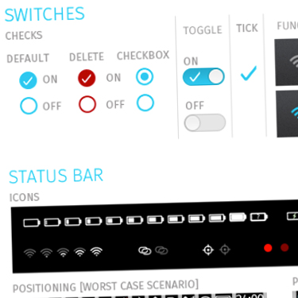

- Componentes en HTML+CSS para manetener consistencia visual entre apps
- Accesibilidad - Utilizan roles Aria.
- Aceleran el desarrollo de la app
- Barras de progreso y actividad
- Acciones de menu
- Barras de estado
- Botones
- Filtros
- Listas
- Tabs
- Inputs
- Y mucho más...
